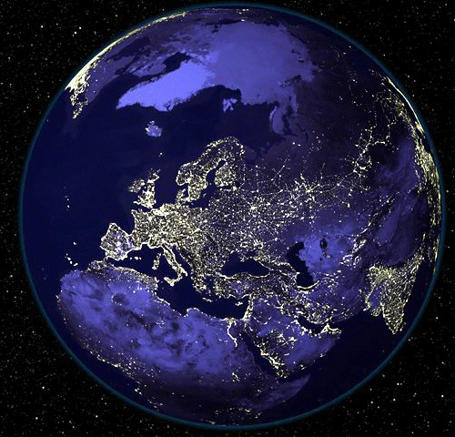
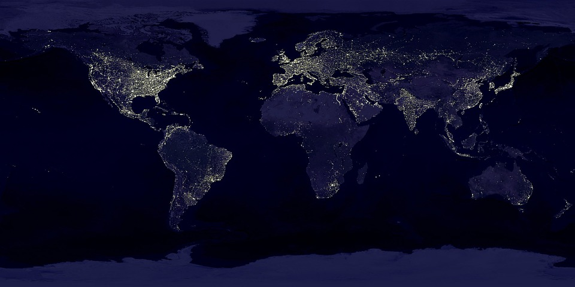
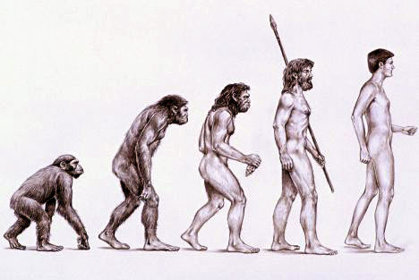
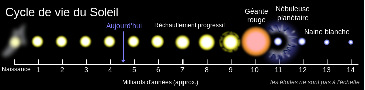
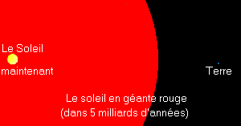
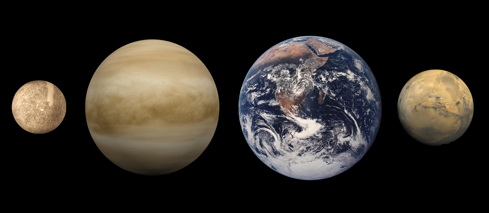
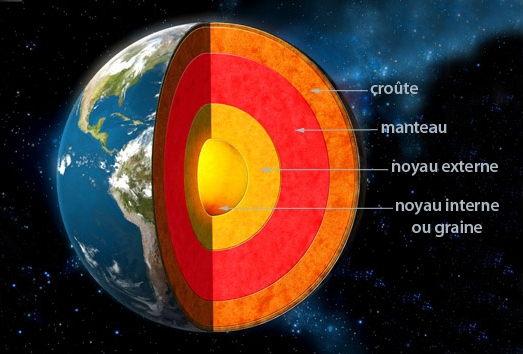

La Terre est une planète du Système solaire, la troisième plus proche du Soleil et la cinquième plus grande, tant en taille qu'en masse, de ce système planétaire dont elle est aussi la plus massive des planètes telluriques.

| La Terre est une planète du Système solaire, la troisième plus proche du Soleil et la cinquième plus grande, tant en taille qu'en masse, de ce système planétaire dont elle est aussi la plus massive des planètes telluriques. |
|
| La Terre s'est formée il y a 4,54 milliards d'années environ et la vie y est apparue moins d'un milliard d'années plus tard. La planète abrite des millions d'espèces vivantes, dont les humains. La biosphère de la Terre a fortement modifié l'atmosphère et les autres caractéristiques abiotiques de la planète, permettant la prolifération d'organismes aérobies de même que la formation d'une couche d'ozone, qui associée au champ magnétique terrestre, bloque une partie des rayonnements solaires, permettant ainsi la vie sur Terre. Les propriétés physiques de la Terre, de même que son histoire géologique et son orbite, ont permis à la vie de subsister durant cette période et la Terre devrait pouvoir maintenir la vie (telle que nous la connaissons actuellement) durant encore au moins 500 millions d'années. La croûte terrestre est divisée en plusieurs segments rigides appelés plaques tectoniques qui se déplacent sur des millions d'années. Environ 71 % de la surface terrestre est couverte par des océans d'eau salée qui forment l'hydrosphère avec les autres sources d'eau comme les lacs, les fleuves ou les nappes phréatiques. Les pôles géographiques de la Terre sont principalement recouverts de glace (inlandsis de l'Antarctique) ou de banquises. L'intérieur de la planète reste actif avec un épais manteau composé de roches silicatées (généralement solides, mais localement fondues), un noyau externe de fer liquide qui génère un champ magnétique, et un noyau interne de fer solide. |
 |
| La Terre interagit avec les autres objets spatiaux, principalement le Soleil et la Lune. Actuellement, la Terre orbite autour du Soleil en 365,256 363 jours solaires ou une année sidéralea. L'axe de rotation de la Terre est incliné de 23,437° par rapport à la perpendiculaire du plan de l'écliptique, ce qui produit des variations saisonnières sur la surface de la planète avec une période d'une année tropique (365,24219 jours solaires). Le seul satellite naturel connu de la Terre est la Lune qui commença à orbiter il y a 4,5 milliards d'années. Celle-ci provoque les marées, stabilise l'inclinaison axiale et ralentit lentement la rotation terrestre. Il y a environ 3,8 milliards d'années, lors du grand bombardement tardif, de nombreux impacts d'astéroïdes causèrent alors d'importantes modifications de sa surface. La Terre a pour particularité, du point de vue de l'être humain, d'être le seul endroit connu de l'univers à abriter la vie telle que nous la connaissons, comme la faune (dont entre autres l'espèce humaine) et la flore. Les cultures humaines ont développé de nombreuses représentations de la planète, dont une personnification en tant que déité, la croyance en une terre plate, la Terre en tant que centre de l'univers et la perspective moderne d'un monde en tant que système global nécessitant une gestion raisonnable. La science qui étudie la Terre est la géologie. Compte tenu de l'influence de la vie sur la composition de l'atmosphère, des océans et des roches sédimentaires, la géologie emprunte à la biologie une partie de sa chronologie et de son vocabulaire. |
 |

|

|

|
L'âge de la Terre est aujourd'hui estimé à 4,54 milliards d'années. L'histoire de la Terre est divisée en quatre grands intervalles de temps, dits éons :
La formation de la Terre par accrétion était presque terminée en moins de 20 millions d'années. Initialement en fusion, la couche externe de la Terre s'est refroidie pour former une croûte solide lorsque l'eau commença à s'accumuler dans l'atmosphère, aboutissant aux premières pluies et aux premiers océans. La Lune s'est formée peu de temps après, il y a 4,53 milliards d'années. Le consensus actuel pour la formation de la Lune est l'hypothèse de l'impact géant, selon laquelle un objet (quelquefois appelé Théia), de la taille de Mars et de masse environ égale au dixième de la masse terrestre, est entré en collision avec la Terre. Dans ce modèle, une partie de cet objet se serait agglomérée avec la Terre tandis qu'une autre partie, mêlée avec peut-être 10 % de la masse totale de la Terre, aurait été éjectée dans l'espace, où elle aurait formé la Lune.
L'activité volcanique a produit une atmosphère primitive. De la vapeur d'eau condensée ayant plusieurs origines possibles, mêlée à de la glace apportée par des comètes , a produit les océans. Une combinaison de gaz à effet de serre et d'importants niveaux d'activité solaire permirent d'augmenter la température à la surface de la Terre et empêchèrent les océans de geler. Vers −3,5 milliards d'années, le champ magnétique se forma et il permit d'éviter à l'atmosphère d'être balayée par le vent solaire.
Deux principaux modèles ont été proposés pour expliquer la vitesse de croissance continentale19 : une croissance constante jusqu'à nos jours et une croissance rapide au début de l'histoire de la Terre. Les recherches actuelles montrent que la deuxième hypothèse est la plus probable avec une formation rapide de la croûte continentale suivie par de faibles variations de la surface globale des continents. Sur une échelle de temps de plusieurs centaines de millions d'années, les continents ou supercontinents se forment puis se divisent. C'est ainsi qu'il y a environ 750 millions d'années, le plus vieux des supercontinents connus, Rodinia, commença à se disloquer. Les continents entre lesquels il s'était divisé se recombinèrent plus tard pour former Pannotia, il y a 650-540 millions d'années, puis finalement Pangée, au Permien, qui se fragmenta il y a 180 millions d'années.
| On suppose qu'une activité chimique intense dans un milieu hautement énergétique a produit une molécule capable de se reproduire, dans un système particulier, il y a environ 4 milliards d'années. On pense que la vie elle-même serait apparue entre 200 et 500 millions d'années plus tard. Le développement de la photosynthèse, active depuis bien avant 3 à 3,5 milliards d'années avant le présent, permit à la vie d'exploiter directement l'énergie du Soleil. Celle-ci produisit de l'oxygène qui s'accumula dans l'atmosphère, à partir d'environ 2,5 milliards d'années avant le présent, et forma la couche d'ozone (une forme d'oxygène [O3]) dans la haute atmosphère, lorsque les niveaux d'oxygène dépassèrent quelques pourcents. Le regroupement de petites cellules entraina le développement de cellules complexes appelées eucaryotes. Les premiers organismes multicellulaires formés de cellules au sein de colonies devinrent de plus en plus spécialisés. Aidées par l'absorption des dangereux rayons ultraviolets par la couche d'ozone, des colonies bactériennes pourraient avoir colonisé la surface de la Terre, dès ces époques lointaines. Les plantes et les animaux pluricellulaires ne colonisèrent la terre ferme qu'à partir de la fin du Cambrien (pour mousses, lichens et champignons) et pendant l'Ordovicien (pour les premiers végétaux vasculaires et les arthropodes), le Silurien (pour les gastéropodes ?) et le Dévonien (pour les vertébrés). Depuis les années 1960, il a été proposé une hypothèse selon laquelle une ou plusieurs séries de glaciations globales eurent lieu il y a 750 à 580 millions d'années, pendant le Néoprotérozoïque, et qui couvrirent la planète d'une couche de glace. Cette hypothèse a été nommée Snowball Earth (« Terre boule de neige »), et est d'un intérêt particulier parce qu'elle précède l'explosion cambrienne, quand des formes de vies multicellulaires commencèrent à proliférer. |
 |
|
À la suite de l'explosion cambrienne, il y a environ 535 millions d'années, cinq extinctions massives se produisirent. La dernière extinction majeure date de 66 millions d'années, quand une météorite est entrée en collision avec la Terre, exterminant les dinosaures et d'autres grands reptiles, épargnant de plus petits animaux comme les mammifères, les oiseaux, ou encore les lézards. Dans les 66 millions d'années qui se sont écoulées depuis, les mammifères se sont diversifiés, le genre humain (Homo) s'étant développé depuis deux millions d'années. Des changements périodiques à long terme de l'orbite de la Terre, causés par l'influence gravitationnelle des autres astres, sont probablement une des causes des glaciations qui ont plus que doublé les zones polaires de la planète, périodiquement dans les derniers millions d'années. À l'issue de la dernière glaciation, le développement de l'agriculture et, ensuite, des civilisations, permit aux humains de modifier la surface de la Terre dans une courte période de temps, comme aucune autre espèce avant eux, affectant la nature tout comme les autres formes de vie. |
|  |
| Le futur de la Terre est très lié à celui du Soleil. Du fait de l'accumulation d'hélium dans le cœur du Soleil, la luminosité de l'étoile augmente lentement à l'échelle des temps géologiques. La luminosité va croître de 10 % au cours du 1,1 milliard d'années à venir et de 40 % sur les prochains 3,5 milliards d'années. Les modèles climatiques indiquent que l'accroissement des radiations atteignant la Terre aura probablement des conséquences dramatiques sur la pérennité de son climat « terrestre », notamment la disparition des océans. La Terre devrait cependant rester habitable durant encore plus de 500 millions d'années, cette durée pouvant passer à 2,3 milliards d'années si la pression atmosphérique diminue en retirant une partie de l'azote de l'atmosphère. L'augmentation de la température terrestre va accélérer le cycle du carbone inorganique, réduisant sa concentration à des niveaux qui pourraient devenir trop faibles pour les plantes (10 ppm pour la photosynthèse du C4) dans environ 500 ou 900 millions d'années. La réduction de la végétation entrainera la diminution de la quantité d'oxygène dans l'atmosphère, ce qui provoquera la disparition progressive de la plupart des formes de vies animales. Ensuite, la température moyenne (de la Terre) augmentera plus vite en raison de l'emballement de l'effet de serre par la vapeur d'eau, vers 40 à 50 °C. Dans 1 milliard à 1,7 milliard d'années, la température sera si élevée que les océans s'évaporeront, précipitant le climat de la Terre dans celui de type vénusien, et faisant disparaître toute forme simple de vie à la surface de la Terre. Même si le Soleil était éternel et stable, le refroidissement interne de la Terre entrainerait la baisse du niveau de CO2 du fait d'une réduction du volcanisme, et 35 % de l'eau des océans descendrait dans le manteau du fait de la baisse des échanges au niveau des dorsales océaniques . |
| Dans le cadre de son évolution, le Soleil deviendra une géante rouge dans plus de 5 milliards d'années. Les modèles prédisent qu'il gonflera jusqu'à atteindre environ 250 fois son rayon actuel. Le destin de la Terre est moins clair. En tant que géante rouge, le Soleil va perdre environ 30 % de sa masse, donc sans prendre en compte les effets de marée, la Terre se déplacerait sur une orbite à 1,7 ua (254 316 600 km) du Soleil lorsque celui-ci atteindra sa taille maximale. La planète ne devrait donc pas être engloutie par les couches externes du Soleil même si l'atmosphère restante finira par être « soufflée » dans l'espace, et la croûte terrestre finira par fondre pour se transformer en un océan de lave, lorsque la luminosité solaire atteindra environ 5 000 fois son niveau actuel33. Cependant, une simulation de 2008 indique que l'orbite terrestre va se modifier du fait des effets de marées et poussera la Terre à entrer dans l'atmosphère du Soleil où elle sera absorbée et vaporisée. |
 |
| La forme de la Terre est approchée par un ellipsoïde, une sphère aplatie aux pôles. La rotation de la Terre entraîne l'apparition d'un léger bourrelet de sorte que le diamètre à l’équateur est 43 kilomètres plus long que le diamètre polaire (du pôle Nord au pôle Sud). Le diamètre moyen du sphéroïde de référence (appelé géoïde) est d'environ 12 742 kilomètres, ce qui est approximativement 40 000 kilomètres/π, car le mètre était initialement défini comme 1/10 000 000e (dix-millionième) de la distance de l'équateur au pôle Nord en passant par Paris. La topographie locale dévie de ce sphéroïde idéalisé même si à grande échelle, ces variations sont faibles : la Terre a une tolérance d'environ 0,17 % par rapport au sphéroïde parfait. Proportionnellement, c'est un peu moins lisse qu'une boule de billard neuve, alors qu'une boule de billard usée peut présenter des aspérités légèrement plus marquées45. Les plus grandes variations dans la surface rocheuse de la Terre sont l'Everest (8 848 mètres au-dessus du niveau de la mer) et la fosse des Mariannes (10 911 mètres sous le niveau de la mer). Du fait du bourrelet équatorial, les lieux les plus éloignés du centre de la Terre sont les sommets du Chimborazo en Équateur et du Huascarán au Pérou. |
 |
Le rayon de la Terre est d'environ 6 371 km, selon divers modèles sphériques. La Terre n'étant pas parfaitement sphérique, la distance entre son centre et la surface varie de 6 352,8 km (fond de l'océan Arctique) à 6 384,415 km (sommet du Chimborazo) . Le rayon équatorial est de 6 378,1370 km, alors que le rayon polaire est de 6 356,7523 km (modèle ellipsoïde de sphère aplatie aux pôles).
Une vieille théorie, nouvellement remise sur le devant de la scène, explique que la Terre n'aurait pas toujours eu la même taille, et qu'elle serait en expansion. Une conséquence en serait un rallongement des journées, à l'échelle de plusieurs millions d'années. Cette théorie est peu reconnue par la communauté scientifique mondiale, voire considérée comme de la pseudo-science.
La masse de la Terre est estimée à 5,9722 ×10e24 kg. On la détermine en divisant la constante géocentrique GM par la constante de gravitation G. Sa précision est limitée par celle de G, le produit GM pouvant être déduit des mesures de géodésie spatiale avec une précision bien supérieure.
| La Terre est une planète tellurique, c'est-à-dire une planète essentiellement rocheuse à noyau métallique, contrairement aux géantes gazeuses, telles que Jupiter, essentiellement constituées de gaz légers (hydrogène et hélium). Il s'agit de la plus grande des quatre planètes telluriques du Système solaire, que ce soit par la taille ou la masse. De ces quatre planètes, la Terre a aussi la masse volumique globale la plus élevée, la plus forte gravité de surface, le plus puissant champ magnétique global, la vitesse de rotation la plus élevée et est probablement la seule avec une tectonique des plaques active. La surface externe de la Terre est divisée en plusieurs segments rigides, ou plaques tectoniques, qui se déplacent lentement sur la surface sur des durées de plusieurs millions d'années. Environ 71 % de la surface est couverte d'océans d'eau salée, les 29 % restants étant des continents et des îles. L'eau liquide, nécessaire à la vie telle que nous la connaissons, est très abondante sur Terre, et aucune autre planète n'a encore été découverte avec des étendues d'eau liquide (lacs, mers, océans) à sa surface. |
 |
Si vous voulez retourner en haut de la page, cliquez ici.